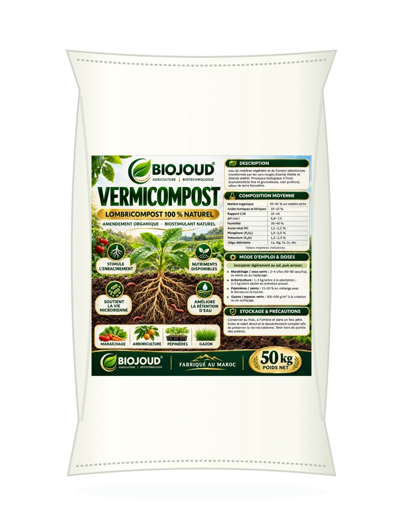
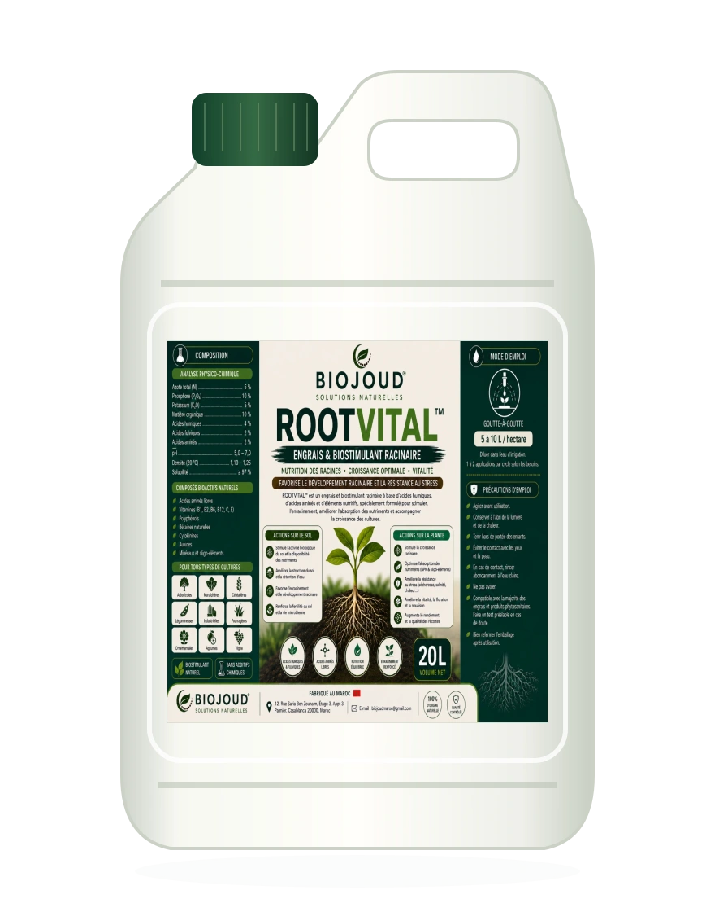
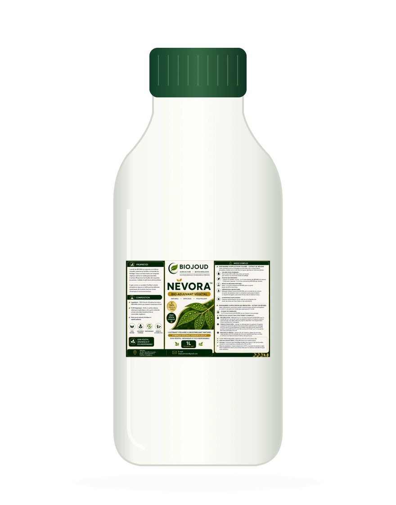

BIOJOUD · SOLUTIONS POUR VOS CULTURES
La force du vivant.
La précision
au champ.
Des sols plus vivants aux cultures mieux accompagnées. Découvrez les solutions BIOJOUD, au croisement de la nature et de la biotechnologie.
BIOJOUD / NOTRE CONVICTION
Tout commence
par un sol vivant.
Sol, racines, feuillage, fleurs et fruits : chaque étape appelle une réponse adaptée. BIOJOUD réunit des formulations organiques, minérales, végétales et microbiennes pour accompagner le travail au champ.
23solutions agricoles
5familles de produits
MAbasée à Casablanca
SERVICE AGRICOLE · WAHDA31
Location de drone agricole
BIOJOUD propose la location de son drone agricole WAHDA31. Contactez-nous sur WhatsApp pour connaître les disponibilités, les tarifs et les modalités de location.
Se renseigner sur WhatsApp
UNE GAMME. PLUSIEURS RÉPONSES.
De la racine
à la récolte.
Des solutions liquides et solides, des matières premières identifiées, une documentation accessible. Trouvez votre point de départ.
Voir la gamme complète


LES SOLUTIONS BIOJOUD
Le bon produit.
Pour le bon besoin.
Explorez nos 23 formulations. Chaque fiche présente la composition, les applications et l’étiquette originale du produit.
23 solutions à découvrirCOMPOSITION · APPLICATION · PDF


Aucun résultat. Essayez un autre mot ou une autre famille.
BIOJOUD · MAROCCasablanca, Maroc
L’ENTREPRISE BIOJOUD
BIOJOUD.
Du vivant au champ.
BIOJOUD est une marque de solutions agricoles implantée à Casablanca, au Maroc. Sa gamme de 23 formulations réunit des solutions pour la fertilité du sol, la nutrition des plantes, la biostimulation, la protection et l’application. Elle s’adresse aux agriculteurs, aux distributeurs et aux partenaires.
01
Des ingrédients identifiés
Algues marines, acides humiques, extraits végétaux, éléments minéraux et micro-organismes : comprendre ce que l’on apporte.
02
Des usages documentés
Les compositions, doses et précautions de chaque formulation sont réunies dans les fiches et les documents originaux.
03
Un échange adapté à votre besoin
Présentez votre culture, votre surface et votre objectif pour demander des informations techniques ou un devis.
LE GUIDE BIOJOUD
Par où commencer ?
Choisissez votre objectif. Retrouvez une première sélection de solutions et leurs fiches détaillées.
Nutrition du sol
Voir cette famille UNE LECTURE PAR BESOIN
Votre culture évolue.
Votre approche aussi.
01 /
Un sol fertile
Structure, matière organique et vie microbienne.
HUMIC PRO · BIOCHAR · VERMICOMPOST↗02 /Des racines actives
Enracinement, reprise et vitalité des cultures.
ROOTVITAL · ATLASIA · MICROBOOST↗03 /Une nutrition ciblée
Des éléments nutritifs selon les besoins de la plante.
MAGVITAL · ARX BIO-CaB · K-90↗04 /Une application maîtrisée
Protection du feuillage, mouillage et couverture.
K-FLEX · VEXTA · KAOLINOVA↗À CHAQUE PROJET, SON ÉCHANGE
Une marque.
Plusieurs façons d’avancer.
Votre parcelle. Votre objectif.
Identifiez le besoin de votre sol ou de votre culture. Comparez les compositions, les doses et les modes d’application avant de préparer votre demande.
- Votre culture et son stade de développement
- La surface et votre mode d’irrigation
- Le besoin observé et la solution recherchée
Explorez la gamme pour votre activité.
Vous distribuez des intrants agricoles ? Présentez votre entreprise, votre zone d’activité et les familles de produits qui vous intéressent pour échanger avec BIOJOUD.
- Votre société et votre zone géographique
- Les produits et conditionnements recherchés
- Les quantités et vos besoins documentaires
Donnons du contexte à votre projet.
Un projet agricole ou une collaboration à proposer ? Décrivez votre activité, votre objectif et les solutions concernées. BIOJOUD est joignable directement à Casablanca par e-mail.
- Votre activité et votre organisation
- Le périmètre et l’objectif du projet
- Les informations techniques nécessaires
LE CENTRE DE RESSOURCES
Les bonnes informations.
À portée de main.
Retrouvez les documents BIOJOUD originaux. Ils restent la référence pour les compositions, les dosages et les conditions d’utilisation.
Comment choisir ma solution BIOJOUD ?+
Commencez par votre besoin : fertilité du sol, nutrition végétale, biostimulation, protection ou application. Consultez ensuite la composition et les usages de chaque fiche. Pour un conseil adapté, précisez votre culture, votre surface et votre objectif dans votre demande.
Où consulter les doses et précautions ?+
Chaque produit dispose d’une page détaillée et d’un PDF original. Les doses sont celles indiquées par le fabricant et doivent être adaptées à la culture et aux conditions d’application.
Quels conditionnements propose la gamme ?+
Les documents présentent des liquides de 1 L et de 20 L, HYBRID CARBON en 20 L et 200 L, KAOLINOVA en 10 kg et trois amendements solides en sacs de 50 kg. Confirmez la disponibilité avec BIOJOUD.
Comment demander un devis ou devenir partenaire ?+
Sélectionnez un produit puis utilisez le formulaire. Mentionnez votre localisation, les quantités souhaitées et votre activité. La demande est préparée dans votre messagerie avant envoi à BIOJOUD.
CONSTRUISONS LA SUITE
Parlons de
vos cultures.
Une question technique, un besoin de devis, un projet de distribution ? Donnez-nous le contexte de votre besoin.
biojoudmaroc@gmail.com 12, Rue Saria Ben ZounaimÉtage 3, Appartement 3, Palmier
Casablanca 20000, Maroc
Étiquettes originales BIOJOUD présentées sur les conditionnements correspondants. Retrouvez chaque document complet avec le bouton « Étiquette » ou « PDF ». Disponibilité à confirmer auprès de BIOJOUD.